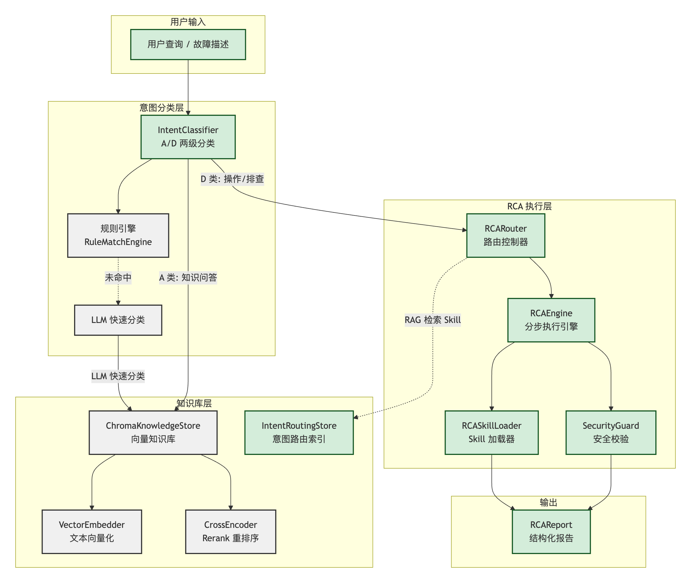
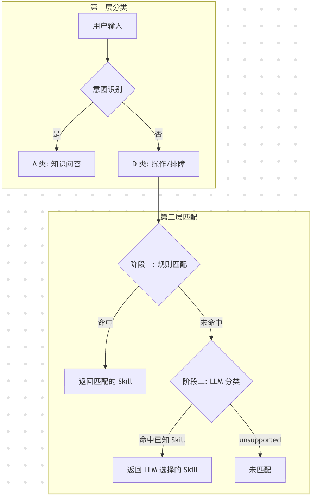
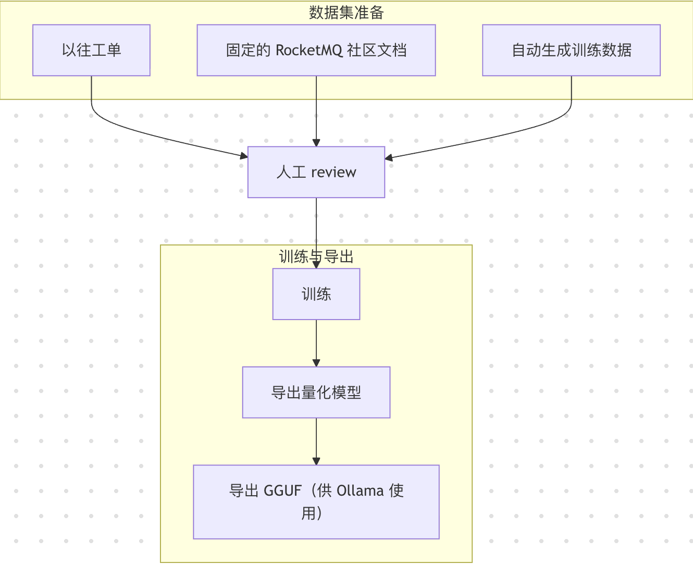

为什么在边缘环境中构建小模型 Agent？业务痛点与技术动机
私有化场景下，故障排查依赖专家"直播式"远程指导，响应慢、效率低、知识难以沉淀复用。
文档越多，越难以派上用场。驻场人员、二线产品面临数款、数个版本的文档，真正遇上问题时，无从查起。
获取基本信息难。组件多，日志在哪儿、什么关键字的日志、如何排查日志、Pod是如何组成的，对于其他人都是黑盒。
不是所有客户都有显卡，但是我们需要服务所有客户。在有限算力下实现智能排障，是产品普及的关键。
基于上述痛点，Aether 选择构建小模型 Agent 方案：
基于1～9B级小模型设计，在CPU/低显存环境下即可运行，大幅降低部署门槛。知识增强策略替代大参数量，实现低成本运行、训练、迭代。
通过领域知识增强和RCA技能编排，具备专业运维排障能力。结构化Skill体系确保推理结果可追溯、可解释、可复用。
真实有效的数据，直接决定Agent的准确性
完形填空式优化
AGENTS.md， SOUL.md， USER.md 等
与企业现有AI Agent、监控告警平台、运维中台等系统对接，形成智能运维闭环
1. TCS-Agent
2. TCE Cloud Mate
1. 结合有版本的源代码
2. 源代码排查融入SOP Skill
复杂排查场景需要多轮交互澄清问题。目前常规Agent利用大模型长场下文的能力保持对话连贯性、理解上下文意图、理解Skill的模式在小模型上完全跑不通。
1. 耗时超乎想象
2. 幻觉是常态
长期记忆与短期记忆的平衡，历史会话状态的存储与检索，如何在资源受限环境下实现高效记忆管理是关键挑战。
1. 抛弃记忆
2. 记忆上移到主Agent
在 RAG 检索场景中，向量相似度搜索（Embedding + L2 距离）虽然能快速召回候选文档，但召回精度有限。Rerank 系统通过引入 CrossEncoder 交叉编码器对初步检索结果进行二次精排，显著提升最终返回结果的相关性。
传统Agent： 向量检索--> Topk --> LLM ---> 输出结果
def _rerank_results(query, results):
# 1. 构建 Query-Document 对
pairs = [(query, result['document']) for result in results]
# 2. CrossEncoder 打分（原始分数通常在 -10 ~ 10 之间）
scores = cross_encoder.predict(pairs)
# 3. Sigmoid 归一化到百分制 (0-100)
scaled_scores = [1 / (1 + exp(-score)) * 100 for score in scores]
# 4. 阈值过滤（默认 60 分）
filtered = [r for r, s in zip(results, scaled_scores) if s >= threshold]
# 5. 按重排序分数降序排列
return sorted(filtered, key=lambda x: x['rerank_score'], reverse=True)
| 配置项 | 环境变量 | 默认值 | 说明 |
|---|---|---|---|
embedding_model |
NANOBOT_EMBEDDING_MODEL |
"" |
Embedding 模型名称/路径 |
chunk_size |
NANOBOT_CHUNK_SIZE |
500 |
分块大小（字符数） |
chunk_overlap |
NANOBOT_CHUNK_OVERLAP |
100 |
分块重叠大小 |
top_k |
NANOBOT_TOP_K |
5 |
检索返回结果数 |
similarity_threshold |
NANOBOT_SIMILARITY_THRESHOLD |
0.0 |
最低相似度阈值 |
rerank_model_path |
NANOBOT_RERANK_MODEL_PATH |
"" |
Rerank 模型路径 |
rerank_threshold |
NANOBOT_RERANK_THRESHOLD |
0.8 |
Rerank 过滤阈值 |
| 调优项 | 推荐范围 | 调优经验 | 风险提示 |
|---|---|---|---|
| chunk大小 | 300~800 token |
先用 512 token 作为基线，再按召回质量微调 |
过小易语义缺失，过大易主题混杂 |
| 重叠大小 | 10%~20% |
从 64 token 起步，关注跨段问答命中率变化 |
过低会断上下文，过高会引入冗余与重复召回 |
| 人工chunk border【新增支持】 | 标题/步骤/代码块边界 | 先规则切分再模型切分，确保结构化知识完整落入单 chunk | 规则过多会导致 chunk 分布不均，影响批处理效率 |
Tool --> Atomic Skill --> Sop Skill
结论： 分步骤执行将SLM执行Skill变成可能。但是：
1. 开源的Skill格式无法通用， 需要转格式. 升级、维护需要自动化的工具支持（展示）
2. 执行整体耗时偏大。分步骤后， 整体执行耗时变大， 待优化

skill:
name: get_rocketmq_pods
version: "1.0"
type: atomic
description: |
[内部原子技能] 直接调用 kubectl_get_pods 工具获取 Pod 列表。
input_schema:
namespace: string
component_keyword: string
exclude_keywords: string
output_schema:
pods: list
total: int
execution:
steps:
- id: fetch
type: tool
tool: kubectl_get_pods
input:
namespace: "{{namespace}}" # 命名空间，使用模板变量
component_keyword: "{{component_keyword}}" # 组件关键字，使用模板变量
exclude_keywords: "{{exclude_keywords}}" # 排除关键字，使用模板变量
skill:
name: resolve_and_get_rocketmq_pods
version: "1.0"
type: sop
description: |
查询 RocketMQ 组件的 Pod 列表、进程状态、服务运行信息。自动将用户输入的组件简称映射为 Kubernetes 中的实际关键字。
input_schema:
param1: string # 用户输入的原始文本
output_schema:
pods: list # Pod 列表，包含每个 Pod 的详细信息
total: int # Pod 总数
execution:
steps:
- id: resolve_component
type: llm
input:
param1: "{{user_input}}"
prompt: |
你是一个信息抽取器，只做字段提取，不做解释。
【任务】
从用户输入中提取3个字段，并输出JSON：
- namespace
- component_keyword
- exclude_keywords
【组件枚举（只能选一个）】
broker -> ocloud-tdmq-rocketmq5-broker
namesrv -> ocloud-tdmq-rocketmq5-namesrv
proxy -> ocloud-tdmq-rocketmq5-proxy
manager -> ocloud-tdmq-rocketmq-manager
【规则】
1. component_keyword 必须从上面枚举中选择一个
2. namespace 如果没有，填 ""
3. exclude 如果没有，填 ""
4. 只输出 JSON，不要任何解释
5. JSON 必须是一行
6. 必须排除 cmq
【输出格式（严格照抄key）】
{"namespace":"","component_keyword":"","exclude_keywords":""}
【示例】
输入: 查询 rocketmq broker pod
输出: {"namespace":"","component_keyword":"ocloud-tdmq-rocketmq5-broker","exclude_keywords":""}
输入: 查一下 test-ns 的 proxy
输出: {"namespace":"test-ns","component_keyword":"ocloud-tdmq-rocketmq5-proxy","exclude_keywords":""}
输入: 查询 broker 排除 cmq
输出: {"namespace":"","component_keyword":"ocloud-tdmq-rocketmq5-broker","exclude_keywords":"cmq"}
【开始】
输入: {{param1}}
输出:
output_schema:
component_keyword: string
exclude_keywords: string
namespace: string
- id: get_rocketmq_pods
type: skill
skill: get_rocketmq_pods
input:
namespace: "{{resolve_component.namespace}}"
component_keyword: "{{resolve_component.component_keyword}}"
exclude_keywords: "{{resolve_component.exclude_keywords}}"
output_schema:
pods: list # Pod 列表，包含每个 Pod 的详细信息
total: int # Pod 总数
| 步骤类型 | 执行方式 | 说明 |
|---|---|---|
| skill | 查找 Atomic Skill → 解析输入 → 安全校验 → 执行 → 校验输出 | 通过 Atomic Skill 间接调用工具 |
| tool | 解析输入 → 安全校验 → ToolRegistry 直接执行 | 直接调用 ToolRegistry 中的工具 |
| llm | 解析引用 → 渲染 Prompt → 单轮 SLM 调用 → 解析 JSON | 独立的 LLM 调用，最小上下文 |
| root_cause_definition | 收集前置步骤输出 → 遍历规则 → 条件匹配 → 输出根因 | 确定性规则引擎，不依赖 LLM |
从 LLM 总结步骤的 summary 字段提取
从 root_cause_definition 或 LLM 步骤提取
成功步骤数 / 总步骤数
每个步骤的 ID、类型、状态和耗时
从 solution 和 recommendation 字段汇总
意图分类 + 分级路由
结论： 分级路由不只是“分类逻辑”，而是独立的性能治理模块： 通过“规则快速命中 + LLM 兜底回退”的组合，将处理时延从默认秒级路径收敛为可控的低时延路径。
纯知识性问题，交由 LLM 直接回答。通过关键词模式匹配快速识别。
需要执行具体操作的请求，进入 Skill 执行流程。采用两阶段匹配策略，分为：简单操作、复杂操作。

📁
nanobot/rca/rule_engine.py
{skill_name: [regex_pattern, ...]} 格式add_rule / remove_rules
# 规则配置示例
rules_config = {
"check_pod_status": ["查看.*pod", "pod.*状态"],
"check_disk_usage": ["磁盘.*满", "disk.*full"]
}
当规则匹配未命中时，回退到 LLM 快速分类：
将所有已注册的 Skill 名称列表构建为 Prompt
让 LLM 从列表中选择最匹配的 Skill，或返回 "unsupported"
精确匹配 + 忽略大小写匹配校验
⚠️ 关键约束：LLM 在此阶段仅用于分类，不参与执行、不生成步骤、不推理根因。

1. 以往工单
收集历史运维工单作为原始训练素材，覆盖实际故障场景。
2. 固定文档
整合官方文档、最佳实践指南等结构化知识。
3. 自动生成训练数据
基于模板生成多样化训练样本，扩充数据规模。
对数据集进行质量审核、格式标准化和样本筛选，确保训练数据准确性和一致性。
采用LoRA/QLoRA等参数高效微调技术，在本地【Macbook Pro M4】下定向训练。
1. 本地代码训练演示
2. Llamafactory训练演示
训练完成后导出量化模型，优化推理效率和资源占用。
转换为GGUF格式，适配Ollama部署，实现低成本、易部署的小模型推理服务。